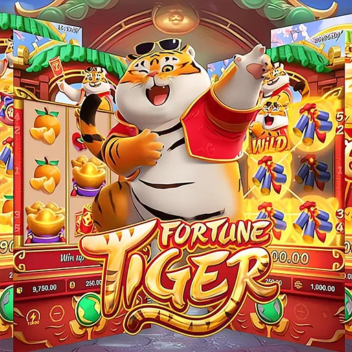

Qual o jogo mais querido pelos fãs?


O Jogo do Bicho e o Tigrinho são dois jogos que alcançaram uma base de usúarios muito grande com o passar dos anos. Adotando o estilo de jogo "jogos de azar", os dois jogos tem como objetivo fazer seus usúarios gastarem dinheiro tendo a chance de terem lucros ou prejuizos. O sucesso desses jogos foram tão grandes que é possível encontrar jogos semelhantes inspirados neles.
A seguir você pode conferir mais sobre desses jogos:Jogo do Bicho ou Tigrinho